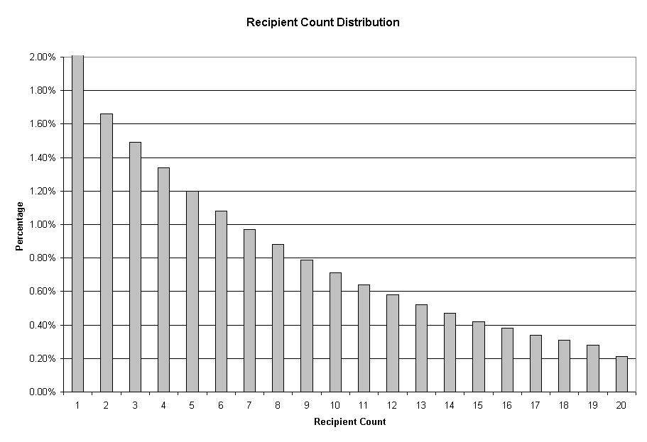
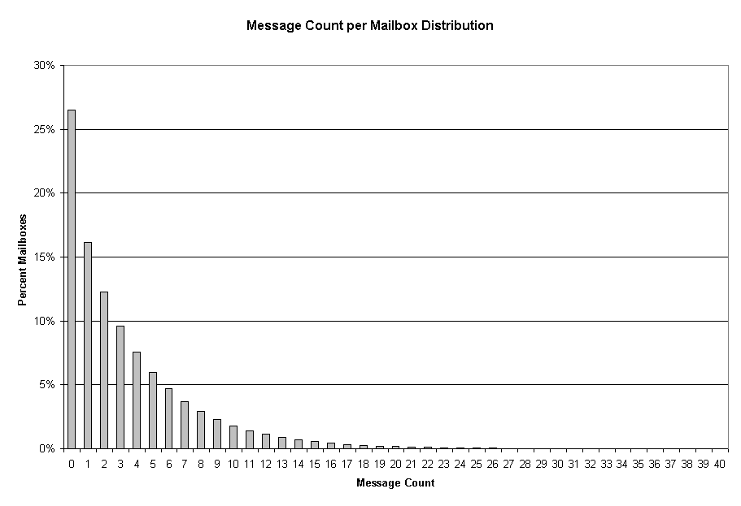
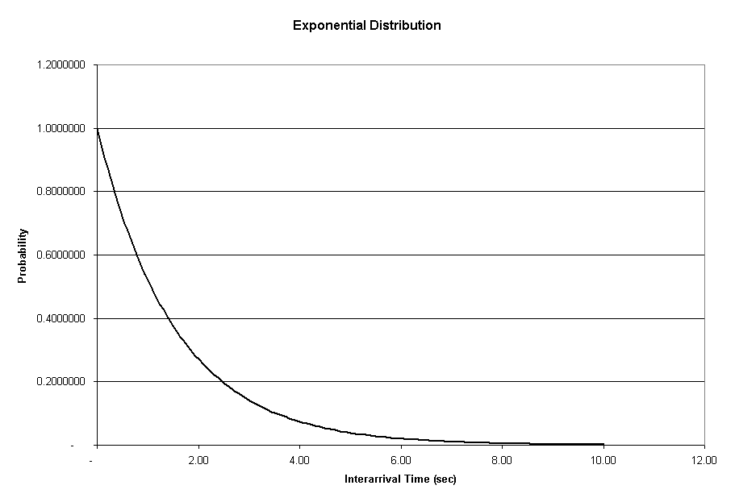
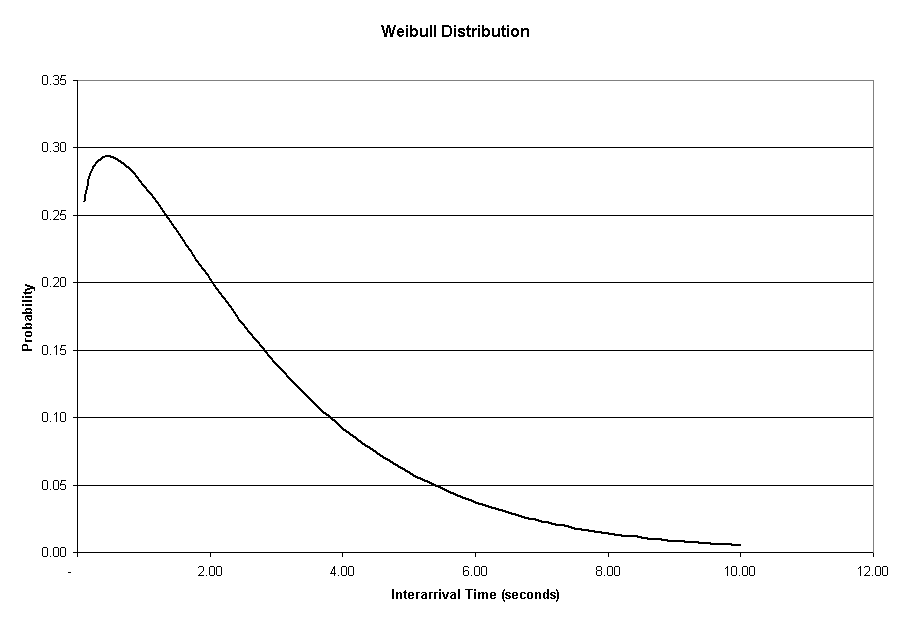
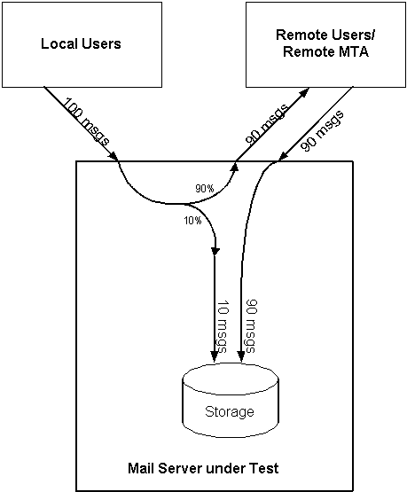
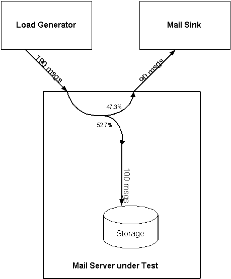
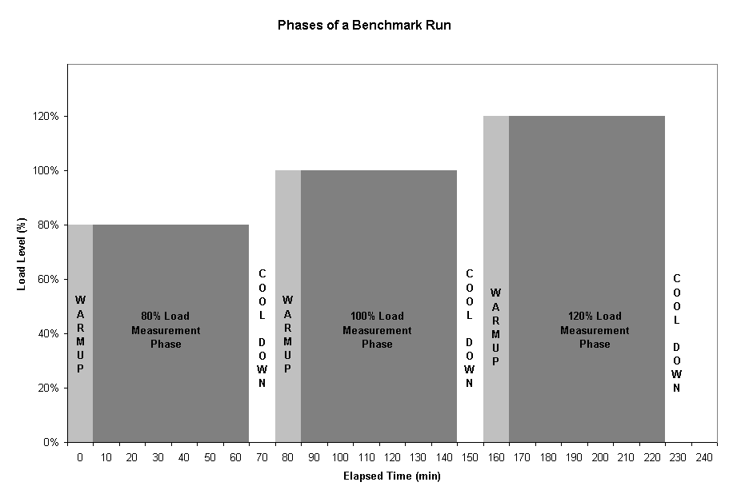

SPECmail2001 Mail Server Benchmark
Architecture White Paper
Version 1.00
Last modified: January 16, 2001
|
SPECmail2001 Mail Server Benchmark
|
1. Introduction1.1. Overview2. Design Principles
1.2. Organization of this Paper
1.3. Related Documents
1.4. Run and Reporting Rules2.1. Requirements and Goals3. Benchmark Metric: SPECmail2001 Messages per Minute
2.2. Excluded Goals4.1. Basis of Workload Definition5. Detail Aspects of Workload Simulation
4.2. Transaction Workload4.2.1. User Profile4.3. Pre-population of Mail Store4.2.1.1. Message Size (MSG_SIZE_DISTRIBUTION)4.2.2. Transactions and Parameters per POP/SMTP session
4.2.1.2. Recipient Count (MSG_RECP_DISTRIBUTION)4.2.2.1. SMTP Session4.2.3. Transaction Workload Calculation
4.2.2.2. POP3 Session4.3.1. Pre-populated Mail Store Calculation4.4. Benchmark Metric Calculation
4.3.2. Analytical Background
4.5. Mail Server Housekeeping Functions5.1. Arrival Rate and Interarrival Time Distribution6. Quality of Service5.1.1. Arrival Rate5.2. Traffic to/from Remote Mail Servers
5.1.2. Interarrival Time
5.3. POP Retries6.1. Response Times7. Performance Characterization
6.2. Delivery Times
6.3. Remote Delivery Times
6.4. Error Rates
6.5. Overall QoS Requirement8. Components of a Benchmark Setup
8.1. System under Test9. Future Plans
8.2. Benchmark Test Client Systems
Appendix: Questions and Answers
SPECmail2001 is a software benchmark designed to measure a system's ability to act as a mail server servicing email requests, based on the Internet standard protocols SMTP and POP3. The first version concentrates on the Internet Service Provider (ISP) class of mail servers, with an overall user count in the range of 10,000 to 1,000,000 users. It models POP consumer users. A future version will address business users and the IMAP4 protocol.
SPECmail2001 has been developed by the Standard Performance Evaluation Corporation (SPEC), a non-profit group of computer vendors, system integrators, universities, research organizations, publishers, and consultants.
This paper discusses the benchmark principles and architecture, and the rationale behind the key design decisions. It also outlines the workload used in the benchmark, and the general steps needed to run a benchmark. However those aspects are covered in more detail in other documents.
Chapter 2 discusses the basic goals and non-goals of the benchmark.
Chapter 3 introduces the performance metric of SPECmail2001 - messages per minute - and how it relates to the transaction mix imposed on the system under test..
Chapter 4 explains the benchmark workload - how it was derived, how it translates into configuration parameters for the benchmark tool and size calculations for planning a benchmark, and how it relates to the benchmark metric.
Chapter 5 discusses some detail of aspects of the workload generation, namely the exact workload put on the server, and how the benchmark simulates communication with remote mail servers.
Chapter 6 defines the quality of service requirements of this benchmark.
Chapter 7 presents the 3-point performance characterization provided by this benchmark - showing server behavior under target load (100%), as well as under lower load (80%) and overload (120%).
Chapter 8 sketches the hardware and software elements used in a SPECmail2001 benchmark.
Chapter 9 concludes with an outlook into future plans.
An appendix with questions and answers is provided at the end of the paper, reflecting discussions that the workgroup has had in the design and implementation of this benchmark. This material was deemed relevant enough to be captured in this white paper; yet it was eliminated from the main body so as to streamline the presentation of what the benchmark is (and not what it is not). Throughout the preceding chapters, there are links provided into the Q&A section, to indicate how the "off-topic" discussions relate to aspects of the benchmark.
All documents can be obtained from the mail server home page.
The Run and Reporting Rules for the SPECmail2001 benchmark are spelled out in a separate document. They ensure execution of the benchmark in a controlled environment. The goal is repeatability by third parties with reasonable resources and knowledge. The rules maximize the comparability of results, leveling the playing field as much as possible. They also define which information needs to be included in published results, and which supporting information needs to be submitted to the SPEC community for potential review.
Under the terms of the SPECmail2001 license, SPECmail2001 results may not be publicly reported unless they are run in compliance with the Run and Reporting Rules. Results published at the SPEC web site have been reviewed and approved by the SPECmail committee. For more information on publishing results at the SPEC web site, please send e-mail to: info@spec.org. The Run and Reporting Rules may be found on the SPEC web site; they are also part of the SPECmail2001 distribution kit.
SPECmail2001 is a mail server benchmark testing the capacity of a system as a mail server, while serving requests according to the Internet standard mail protocols SMTP (RFC821) and POP3 (RFC1939). SMTP is the standard for sending email from clients to servers, and between servers. POP3 is a protocol for mail access and retrieval by the user.
SPECmail2001's model for a POP user is a consumer customer of an ISP. The details of a consumer-type user's behavior will be discussed in a later chapter in this paper. Mail server user behavior varies greatly. It is therefore very important to define the type of assumed user, before discussing how many users a mail server can handle.
SPECmail2001 simulates the load which would be generated by a certain user population, and observes the mail server behavior under that load. It enforces the adherence to a required level of quality of service. The goal is to simulate realistic mail server operation, to maximize the usefulness of the benchmark results as guidelines for actual sizing decisions.
The key goal of SPECmail2001 is to show mail server performance in a realistic context. This means
Capacity at acceptable quality of service (QoS) is the basis of the performance metric of this benchmark. Acceptable QoS is measured by interactive response time of the mail server to each protocol step (see chapter 6). This metric is therefore
SPECmail2001 messages per minute
One SPECmail2001 message per minute includes a mix of transactions that a mail server needs to perform on a single message, from first receiving it to finally deleting it. This transaction mix depends on the workload, which will be defined later on in this document. For the following workload
- each user sends two message per day, to two recipients
- each user receives two messages per day
- each user checks his/her mailbox four times a day
- all messages get retrieved and deleted
the transaction mix for 1 SPECmail2001 message per minute consists
of the following elementary mail server operations:
| Transaction Type | Transaction Count per Minute |
| message sent by user | 1 |
| message sent to remote mail server | 0.9 |
| message received from remote mail server | 0.9 |
| mailbox check | 2 |
| retrieval and deletion of message | 2 |
This metric cannot be compared to any other similarly named benchmark metric
which does not follow exactly that workload definition and the same execution
rules. Every aspect of each may affect the benchmark outcome.
| See also Q&A section: | Why isn't the benchmark metric "Number of Users"? |
| Why isn't the benchmark metric "Parallel Sessions"? |
The SPECmail2001 workload has two parts: the pre-population of the mail store and the transaction workload during runtime. Both depend on the targeted benchmark rating.
It may be helpful at this point to list the basic steps of running a SPECmail2001 benchmark.
The definition of a pre-population of the mail server ensures that a system claiming to handle the transaction load for 1 million users is also capable to handle the mail data related to 1 million users. The pre-population consists of a message distribution across all mailboxes. The runtime load defines the number and kind of transactions that will be issued to the server during the benchmark run.
The SPECmail2001 benchmark is designed so that it generates a steady mail server state: over time, it adds as many messages to the mail store as it removes. Note, however, that insertion and deletion happens on mailboxes which are independently (and randomly) selected - i.e. "steady state" does not mean that the contents of the mail store, or any part of it, will be static. Just the overall volume should only fluctuate within certain limits. This behavior is not quite realistic - a production mail server will "breathe" over time, and it may actually grow over time, due to increasing user demands. However, this behavior is deemed close enough to reality, and greatly simplifies the running of series of benchmarks on the same mail store setup.
A stable mail store's contents can be determined fully by the transaction workload - we'll therefore discuss the transaction workload first, and determine the resulting mail store pre-population after that.
The workload profile has been determined based on observing actual systems in production. At the time of this writing, it appears very difficult to impossible to provide the background data of this workload definition for public review, due to business aspects of the companies involved. The workload definition is therefore based on a two-pronged approach:
The workload definition is believed to be currently realistic for the indicated user type, consumer POP user. The average user profile is, however, a moving target, affected by changing user behavior, evolving technology, etc.
Note: The SPEC consortium is interested in extending its base of field data for this workload characterization. If you are an ISP willing to share traffic data with SPEC, then please contact the work group.
The Transaction Workload defines the number and type of transactions issued
against the system under test during the measurement phase of the benchmark.
It scales linearly with the number of users and with the SPECmail2001 messages
per minute performance metric.
Its parameters are:
The definition of the transaction workload starts with an assessment of the
per-user, per-day load profile. The following tables show assumptions for that
profile, as well as the semantics for the elements in that profile. A third
column shows the related configuration parameter of the benchmark tool - names
in ALL_UPPER_CASE are actual configuration parameters
of the benchmark tool, names using UpperAndLower case are inserted only for
editorial purposes.
| Parameter | Workgroup Estimate | related benchmark tool parameters |
| number of users (defined by test sponsor) | example: 1 million | USER_START, USER_END UserCount := USER_END - USER_START + 1 |
| messages sent per day | 2 | MSG_SENT_PER_DAY |
| average recipients per message | 2 | MSG_RECP_DISTRIBUTION |
| messages received per day | 4 | (MsgRcvd) |
| mailbox checks per day | 4 | POP_CHECKS_PER_DAY |
| % of mailbox checks which don't download messages | 75% | (REPEATED_POP_CHECKS_PER_DAY) |
| average message size in KB | 25 | MsgSz, MSG_SIZE_DISTRIBUTION |
| % of users using modems (56Kbit) | 90% | DATA_RATE_DISTRIBUTION |
| % of daily activities during busiest hour | 15% | PEAK_LOAD_PERCENT |
| % of mail to/from remote addresses |
|
MSG_DESTINATION_LOCAL_PERCENT |
Explanation of Parameters:
| UserCount | This is not a predefined load parameter; rather, it is the user-defined goal of a benchmark run. It scales linearly with the benchmark metric. | |
| MSG_SENT_PER_DAY | The number of messages sent per day per user. | |
| MSG_RECP_DISTRIBUTION | Number of recipients per message: every SMTP message can be directed to multiple users. This parameter affects how many messages are actually found in the mail store. | |
| MsgsRcvd | Number of messages received, per user and day. While this is a favorite parameter to monitor, it is not really an active part of the user behavior: every user will receive whatever is in the mailbox. In the case of SPECmail2001, it is assumed that the amount of sent and received messages is identical. | |
| POP_CHECKS_PER_DAY | Number of mailbox checks per day and user. | |
| REPEATED_POP_CHECKS_PER_DAY | Number of "repeated" mailbox checks per day and user. Workload studies show regularly that POP email users tend to generate a high percentage of POP sessions which operate on previously emptied mailboxes and hence do not download any messages. The workgroup discussed the fraction of these (i.e. PctEmpty), while the benchmark tool implements the actual count of each type. REPEATED_PO_CHECKS_PER_DAY must be less than POP_CHECKS_PER_DAY to make sense. | |
| MSG_SIZE_DISTRIBUTION | Average message size. It should be noted that the actual size of messages varies greatly - a vast majority is very small. A large part of this average size results from a minority of large messages. Accordingly, SPECmail2001 actually defines a mail size distribution, of which this is the average. | |
| DATA_RATE_DISTRIBUTION | Fraction of users using slow modem connections - the rest is assumed to be connected via low-latency, high-bandwidth links. The main effect of slow connections is to drag out mail sessions in length, which in turn affects the dynamic memory footprint of the mail server, as well as CPU usage efficiency. | |
| PEAK_LOAD_PERCENT | SPECmail2001 simulates the peak hour of mail traffic. This factor is key to translate the per-day user profile to the per-second transaction load definition. | |
| MSG_DESTINATION_LOCAL_PERCENT | Fraction of the mail traffic going to /coming in from the internet. SPECmail2001 assumes the two are the same - overall the mail server under test produces as much external mail as it consumes. |
The benchmark tool generates test messages on the fly. The size of each message
is determined according to a distribution resulting from user data evaluation,
which counted messages from buckets of certain sizes. The characteristic of
the distribution is that the vast majority of messages is small, while there
are also a few very large messages in the mix. The average message size is
24.5KB.
| Message Size (KB) | Percentage in Mix |
| 1 | 10.20% |
| 2 | 30.71% |
| 3 | 20.59% |
| 4 | 10.78% |
| 5 | 5.88% |
| 6 | 3.74% |
| 10 | 7.44% |
| 100 | 9.79% |
| 1000 | 0.69% |
| 2,675 | 0.18% |
Each message gets sent to one or more recipients. The vast majority of messages
gets sent to one recipient, while others get sent to up to 20 recipients. The
distribution is controlled by the configuration parameter MSG_RECP_DISTRIBUTION.
The fixed setting is given in the table and chart below.
| Recipient Count | Percentage |
| 1 | 85.73% |
| 2 | 1.66% |
| 3 | 1.49% |
| 4 | 1.34% |
| 5 | 1.20% |
| 6 | 1.08% |
| 7 | 0.97% |
| 8 | 0.88% |
| 9 | 0.79% |
| 10 | 0.71% |
| 11 | 0.64% |
| 12 | 0.58% |
| 13 | 0.52% |
| 14 | 0.47% |
| 15 | 0.42% |
| 16 | 0.38% |
| 17 | 0.34% |
| 18 | 0.31% |
| 19 | 0.28% |
| 20 | 0.21% |

An SMTP session connects to the server, receives the banner screen, transmits sender, recipients and contents of a message, and disconnects. There are two types of SMTP sessions, and there a slight difference how the configuration parameters affect each one.
For an SMTP session simulating a message sent by a local user, the configuration parameters have the following influence.
For an SMTP session simulating incoming traffic from another mail server, the configuration parameters are applied as follows:
The parameters which determine how many SMTP sessions of these types are being started each second are UserCount, MSG_SENT_PER_DAY, PEAK_LOAD_PERCENT and MSG_DESTINATION_LOCAL_PERCENT:
For the handling of traffic to/from remote mail servers, i.e. the role of the parameter MSG_DESTINATION_LOCAL_PERCENT in this context, please refer to section 5.2.
A POP session:
The following parameters affect the simulation of a POP session:
How many messages are downloaded and deleted, as well as the size distribution of these messages, is determined by what is found in the mail store, which in turn is a result of earlier message-sending activity.
The parameters which determine how many POP sessions are being started each second are UserCount, POP_CHECKS_PER_DAY, REPEATED_POP_CHECKS_PER_DAY, and PEAK_LOAD_PERCENT:
The workload definition discussed in section 4.2.2 leads to the following
overall load definition. For convenience, we are including the related benchmark
metric (SPECmail2001 messages per minute) in the first column - for the relationship
between user count and benchmark metric, please refer to section 4.4.
|
messages per minute |
|
from local users per second |
per second |
POP checks per second |
POP checks per second |
|
|
|
|
|
|
|
|
|
|
|
|
|
|
|
|
|
|
|
|
|
|
|
|
|
|
|
|
|
|
|
|
|
|
|
|
|
|
|
|
|
|
|
|
|
|
|
|
|
|
|
|
|
|
|
|
|
|
|
|
|
|
|
|
|
|
|
|
|
|
The benchmark tool pre-populates the mail store before the first benchmark run. This initialization step uses SMTP sessions to deposit messages in the test accounts. The distribution is based on the workload parameters of the benchmark (see section 4.2). The benchmark performs some analytic computation (see section 4.3.2) to determine which distribution will be the steady state of the mail server under the defined load. The benchmark tool provide the initialization functionality as a separable step (-initonly), and performs a verification of the message distribution before each test run.
An important feature of the benchmark's workload definition is that the mail server, when exposed to repeated test runs, will enter into a steady state. While messages get added and removed, the overall count, as well as the distribution across test accounts, will fluctuate only statistically. Overall, the mail store will neither fill up and overflow (assuming safe sizing), nor will it empty out.
This allows the tester to run repeated benchmark runs back-to-back on the same setup without the need for re-initialization. It is also explicitly acceptable for the tester to backup and restore an initialized mail store.
The number of test accounts is a minimum requirement - the tester is free to establish a larger mail store with surplus test accounts, e.g. to experiment with supportable load levels, or to benchmark different hardware configurations on the same setup.
The rationale for these decisions is:
The transaction workload leads to a mail server steady state. The resulting
distribution of messages over mailboxes has been computed as follows (please
refer to subsequent section for the analytical background):
| Message Count | Percent | Message Count | Percent | Message Count | Percent |
| 0 | 26.50% | 10 | 1.80% | 20 | 0.16% |
| 1 | 16.11% | 11 | 1.42% | 21 | 0.13% |
| 2 | 12.25% | 12 | 1.12% | 22 | 0.10% |
| 3 | 9.61% | 13 | 0.88% | 23 | 0.08% |
| 4 | 7.56% | 14 | 0.69% | 24 | 0.06% |
| 5 | 5.95% | 15 | 0.54% | 25 | 0.05% |
| 6 | 4.68% | 16 | 0.43% | 26 | 0.04% |
| 7 | 3.69% | 17 | 0.34% | 27 | 0.03% |
| 8 | 2.90% | 18 | 0.27% | 28 | 0.02% |
| 9 | 2.29% | 19 | 0.21% | 29 | 0.02% |

This distribution reflects an average message count of 3.43 messages per mailbox - which is in line with expectations (PopMsgsRcvd).
The average message count per mailbox is a base figure for estimating the size of the mail store.
For a test setup for 1 million users, the total message count in the mail store (average over time) is
and the overall raw message data volume is
It is important to note that this is just the raw amount of message data to be expected on average in the mail store. "On average over time" - that means, the benchmark does not guarantee it will stay at exactly that level. A margin of at least 25% is recommended to be added before diving into any further assumptions.
Furthermore, there are further factors with potentially significant impact to be taken into account before determining a safe storage size for the intended benchmark. That is a server-specific planning process, therefore we can't give generally applicable sizing rules here. It is strongly recommended to take not just this overall raw size, but at least the file count (plus 25% headroom) and the message size distribution into the capacity planning process of the target mail server. Further aspects of the user profile may be relevant, too. The following factors may play a role:
Last but not least, disk configuration for a mail server is not strictly a size issue; performance (IO throughput) plays a significant role, too.
This section describes how the steady-state mail store definition has been determined. It provides purely the mathematical background and is not needed to understand and run the benchmark.
The benchmark separates mailboxes into two pools: a pool for initial POP checks and a pool for simulating repeated POP checks. The following calculation looks only into the pool for initial POP checks.
Let
PopRate be the rate at which a mailbox gets emptied out
SmtpRate be the rate at which additional messages hit a mailbox
Note, the time basis does not play a role here, as long as it is the same in both cases.
First, compute
p[0] = the percentage of mailboxes that is empty
(= the probability that a mailbox is empty)
If one observes p[0] along the time axis, then a "new" p[0]' can be computed from an "old" p[0] as follows:
p[0]' = the old percentage of empty mailboxes
MINUS the portion that received mail
PLUS the portion of previously non-empty mailboxes that got POP-checked
in mathematical terms
p[0]' = p[0] - p[0] * SmtpRate + (1 - p[0]) * PopRate
Since we assume the mail store has reached steady state, that probability does not change over time,
p[0]' = p[0]
and this becomes
p[0] = p[0] - p[0] * SmtpRate + (1 - p[0]) * PopRate
Subtract p[0] on both sides, eliminate the parenthesis:
0 = - p[0] * SmtpRate + PopRate - p[0] * PopRate
Isolate terms with p[0]:
p[0] * (SmtpRate + PopRate) = PopRate
Isolate p[0] by dividing by its factor (which is non-zero):
p[0] = PopRate / (SmtpRate + PopRate)
Now, compute
p[i] = the percentage of mailboxes with i messages (i > 0)
(= the probability that a mailbox contains i messages)
A "new" p[i]' can be computed from an "old" p[i] as follows:
p[i]' = the old percentage of mailboxes with i messages
MINUS the portion that received mail (and now has i+1 messages)
MINUS the portion that got POP-checked
PLUS the portion of mailboxes with i-1 messages that received mail
in mathematical terms
p[i]' = p[i] - p[i] * SmtpRate - p[i] * PopRate + p[i-1] * SmtpRate
Since we assume the mail store has reached steady state, that probability does not change over time,
p[i]' = p[i]
thus
p[i] = p[i] - p[i] * SmtpRate - p[i] * PopRate + p[i-1] * SmtpRate
Isolate terms with p[i]:
p[i] * (1 - 1 + SmtpRate + PopRate) = p[i-1] * SmtpRate
simplified:
p[i] * (SmtpRate + PopRate) = p[i-1] * SmtpRate
Dividing by the factor of p[i], which is non-zero:
p[i] = p[i-1] * SmtpRate / (SmtpRate + PopRate)
In order to apply these formulae to the SPECmail2001 workload parameters, we need to make a forward reference to section 5.3, where we'll discuss how the benchmark implements the repeated POP attempts against the same account. The repeated POP attempts introduce an asymmetry into an otherwise completely random process which could be nicely analyzed with a single application of the above rules.
Suffice it to say that the implementation of the POP Retries splits the set of test accounts into two parts: the retry pool and the random pool. Each pool follows the aforementioned scheme, but with different parameters.
For the random pool, we have:
percentage of account in random pool: 92.5%
SmtpRate: 0.925 * 4.00 = 3.70
PopRate: 1.00
and therefore:
p[0] = PopRate / (SmtpRate + PopRate)
= 1.00 / (3.70 + 1.00)
= 21.28%p[1] = p[0] * SmtpRate / (SmtpRate + PopRate)
= 0.21276 * 3.7 / (3.7 + 1.00
= 16.75%p[2] = p[1] * 3.70 / 4.70
= 13.19%...
For the retry pool, we have:
percentage of account in random pool: 7.5%
SmtpRate: 0.075 * 4.00 = 0.30
PopRate: 3.00
and therefore:
p[0] = PopRate / (SmtpRate + PopRate)
= 3.00 / (0.30 + 3.00)
= 90.91%p[1] = p[0] * SmtpRate / (SmtpRate + PopRate)
= 0.90909 * 0.3 / (0.3 + 3.00)
= 8.26%p[2] = p[1] * 0.30 / 3.30
= 0.75%...
In order to compute the combined distribution, these two series need to be combined into a weighted average (92.5% of the first series, 7.5% from the second series). The result is reflected in the table given at the beginning of section 4.3.1.
The transaction mix resulting from the profile, relative to a single SMTP
message sent by a POP consumer user, is:
| Transaction Type | Transaction Count per Minute |
| message sent by user | 1 |
| message sent to remote mail server | 0.9 |
| message received from remote mail server | 0.9 |
| mailbox check | 2 |
| retrieval and deletion of message | 2 |
With the user profile given above, it was already shown that 1 million users
will generate 83.3 SMTP messages per second, which equals 5,000 SMTP messages
per minute. Since the transaction mix contains exactly 1 SMTP message, we have
the basic equation
|
5,000 SPECmail2001 messages per minute = 1,000,000 supported POP consumer users which is equivalent to |
| 1 SPECmail2001 messages per minute = 200 supported POP consumer users |
The following table lists a number of translations between the two quantities
(note that SPECmail2001 ratings are not limited to entries in this table.)
|
consumer users |
messages per minute |
consumer users |
messages per minute |
consumer users |
messages per minute |
|
|
|
|
|
|
|
|
|
|
|
|
|
|
|
|
|
|
|
|
|
|
|
|
|
|
|
|
|
|
|
|
|
|
|
|
|
|
|
|
|
|
|
|
|
|
|
|
|
|
|
|
|
|
|
|
|
|
|
|
|
|
|
|
|
|
|
|
|
|
See also Q&A section: Does SPECmail2001
consider mailing lists?
See also Q&A section: Why does the SPECmail2001
benchmark emphasize on putting as much mail into the mail server as it is taking
out?
Besides the actual workload, the system under test (SUT) is expected to run under normal operating conditions, assuming the production environment of a real-life ISP. The only required function identified to fall into this category is logging, basically:
This chapter discusses select details of how the workload is generated. The material presented here is getting close to description of the benchmark tool implementation, but it is regarded as closely related to the workload definition.
SPECmail2001 is designed to generate the workload as close to real-world situation as possible. In the real world, the load results from many independent clients issuing requests, with no coordination with, or knowledge about each other. A key aspect of this scenario is that even a high load on the mail server, which typically leads to slower responses, won't discourage new clients from showing up. Each of the many clients produces only a tiny fraction of the total load.
SPECmail2001 generates the workload at a defined average rate of requests per unit of time - the arrival rate. In order to understand the significance of this method, one needs to look at the alternative. A benchmark could also put load on the server "as fast as it will go". While that might lead to a faster determination of a peak rate, there are some disadvantages. Under such a load, the mail server could conveniently "throttle" the load dynamically - when ever things get critical, its response time would go up, and therefore the load down. It would also be more difficult to control a correct load mix - a server might serve more requests of the type which are convenient for it. Finally, response times might become unacceptable, and therefore the reported rate meaningless. SPECmail2001 avoids all of these disadvantages.
A second aspect of generating the workload is the interarrival time distribution. A standard assumption for this distribution, in a system with many independent arrivals is the exponential distribution. A study of log data from a mail server showed that a Weibull distribution fitted the distribution better. For the reader's convenience, here are two graphs showing the shape of these distributions.


A distinguishing aspect of the Weibull distribution is that it shows a lower
probability for very short interarrival times. Since this distinction depends
a lot on how much the timestamps in the logs can be trusted, at the very
low end, discussion ensued whether the Weibull distribution was really the
correct answer here. The suspicion was expressed that artifacts of the conditions
of the workload study may have been at play here.
As a practical matter, and certainly a contributing factor in the discussion, the Weibull distribution is very difficult to implement correctly in a distributed load generator environment. The exponential distribution has the convenient feature that the overlaid effect of several exponentially-distributed event streams is once again exponentially distributed. The load can therefore be split up between N load generator systems, and each can do its work independently. The same is not true for the Weibull distribution. Correct implementation would need to pay special attention to the very small interarrival times. Distributed load generators could achieve that only through near-perfect clock synchronization. This would have added another level of complexity to the execution of this benchmark: time synchronization, potentially across different platforms.
The workgroup therefore decided to accept the theory "exponential distribution in = Weibull distribution out" (meaning, if a mail server gets triggered with events according to an exponential distribution, it may very well log events with a Weibull distribution), and to base the benchmark on the exponential distribution.
See also Q&A section: Why does the benchmark emphasize on generating requests at a certain arrival rate and pattern?
SPECmail2001 assumes that 90% of the messages sent
are going to external users (i.e. are forwarded to remote mail servers),
and that 90% of the mail received by users originated from external users
(i.e. is received from remote mail servers). The following diagram shows
the real mail flow that would result from this assumption.

SPECmail2001 simulates this external mail exchange by
The effective mail flow looks as follows:

SPECmail2001 "integrates" the incoming mail from remote servers with the mail sent by local users. Accordingly, a few factors get adjusted, compared to what one would expect from the user profile:
This adjustment is done according to the following formulae. The variable names do not reflect tool configuration parameter names or tool-internal variable names; they have been choosen to be self-explanatory for the purpose of this discussion.. Given
SmtpArrivalsFromUsersPerSec
SmtpFromUserToRemotePercent
SmtpFromUserModemPercentage
Then
SmtpTotalArrivalsPerSec =
(1 + SmtpFromUserToRemotePercentage) * SmtpArrivalsFromUsersPerSec
and
SmtpEffectiveRemotePercentage =
SmtpFromUserToRemotePercentage / (1 + SmtpFromUserToRemotePercentage)
and
SmtpEffectiveModemPercentage =
SmtpFromUserModemPercentage / (1 + SmtpFromUserToRemotePercentage)
Using the same numbers as in the diagrams, here is an example:
In this example case, the benchmark tool would therefore
Note, all remote communication of the mail server is assumed to be at full network speed, hence the Mail Sink does not simulate any bandwidth limitation.
POP users typically have set up their email client so that it performs periodic mailbox checks after a defined interval. From the point of the mail server, this generates a load on mailboxes which have recently been checked and which in all likeliness are empty. Overall, the vast majority of POP sessions is logged as "empty", i.e. no messages are being downloaded.
The main aspects of this load are that the mailboxes are typically empty, and that they have recently been checked. Both aspects may have effects on the mail server's efficiency to handle requests on these mailboxes. The benchmark simulates this special load by setting aside a portion of the test accounts (referred to as the "retry pool") for use by frequent repeat checks, while performing exclusively "initial" POP checks against the remainder (the "random pool"). While not in line with what is going on in reality, it does implement the main aspects (typically empty accounts, recently checked), and it simplified the implementation since it did not introduce complex state management of test accounts.
We mentioned potential benefits, i.e. aspects which make accessing these test accounts easier for the mail server. Caching of repeatedly used information is a good strategy; that's why the benchmark addresses this specific aspects of a POP3 workload.
However, there is also a potential down-side to be taken into account here - according to the POP3 specification, the mail server may keep an account locked for a certain period of time (5 minutes). Therefore the benchmark needs to avoid overly aggressive repeated accesses to the same test account. The configuration parameter REPEATED_POP_CHECK_INTERVAL_SECONDS specifies the minimum time interval after which a mailbox is being checked again. The conforming setting of this parameter is 300 seconds. In practice, a re-check of a mailbox in the retry pool will happen between this time, and twice that duration (under the conforming setting, between 300 and 600 seconds).
The size of the retry pool is determined so that the minimum re-check interval is safely observed AND so that the size of the pool is appropriate for all three load levels (80/100/120%). Changing the retry pool size would mean disturbing the steady state of the mail server, therefore it needs to be avoided. For the conforming parameter setting, 7.5% of the mailboxes will be assigned to the retry pool, leaving 92.5% for the mainline operation.
On the SMTP side, there is no special consideration for the retry pool: messages are sent randomly against all test accounts without consideration for random vs. retry pools. While checking of Delivery Time is going on on a mailbox, it is protected from any unrelated POP activity, be it initial POPs or POP retries.
The mailboxes for the retry pool are being selected at random by the benchmark tool on each run, in a way that is compliant with the steady state.
If the tester changes the overall user count, in order to verify another load level, then the steady state of the mail server is maintained - since the different or additional set of mailboxes will contain its own portion of candidates for the retry pool.
SPECmail2001 accepts only throughput claims which are proven while maintaining some minimal Quality of Service (QoS). There are two aspects to quality of service - the interactive response time of the mail server to each protocol step, as directly or indirectly observed by the user, and the delivery time that it takes to make a message available to a (local) recipient. The SPECmail2001 QoS standard are meant to support high-quality mail service, rather than promote barely acceptable service levels.
Response times of the server, in reaction to each request, are measured by the benchmark tool, with an accuracy of approx. 0.1 seconds. The clock starts before sending the request, and it stops when the response, or the first packet thereof, is received.
Among the requests issues by SPECmail2001, there are two - SMTP-data and POP-retr - whose response time depends on the amount of data being transmitted. The response time criteria are therefore split into two groups.
For all requests other than SMTP-data and POP-retr, SPECmail2001 requires that, for each request type,
95% of all response times
must be under
5 seconds.
This may appear like a very lax standard - the rationale was to capture complex as well as trivial mail server requests in one number.
For the SMTP-data and POP-retr requests, the size of the test message, as well as the artificial delays inserted for modem bandwidth simulation need to be taken into account. The maximally allowed response time for these requests has two components
The first component is
identical to the QoS requirement for the first group. The second component is computed based on the message size, requiring that
Note that for simplicity of implementation, the allowance for modem bandwidth is made, whether or not the message is actually subject to modem delay simulation. The rationale being that a mail server which is slowing down due to overload will likely do this across the board.
The complete formula for the QoS cutoff time for this group is therefore
and, again,
need to meet that condition.
Examples
The modem bandwidth simulates 56.6Kbaud; we'll assume in the following math that this equates to 6,000 bytes/sec. The formula becomes therefore
The following table illustrates how the constant component dominates the
effective QoS cutoff time for small messages, and how it becomes less and less
relevant for larger message sizes.
|
Message Size
|
QoS Cutoff Time
|
|
1,000 bytes
|
5.000 + 0.333 = 5.3 sec
|
|
10,000 bytes
|
5.000 + 3.333 = 8.3 sec
|
|
100,000 bytes
|
5.000 + 3.333 = 38.3 sec
|
|
1,000,000 bytes
|
5.000 + 33.333 = 338.3 sec
|
|
2,000,000 bytes
|
5.000 + 666.666 = 671.7 sec
|
The benchmark tool determines the allowed response time on the fly, on a message-by-message basis, and maintains passed/fail counts just like for other QoS criteria.
Delivery time is defined as the time it takes from sending a message via SMTP to it becoming available to a user attempting retrieval. SPECmail2001 performs the check for availability to the receiving user via POP attempts. By adding this QoS requirement, the mail server is forced to actually deliver the mail to the target mailboxes in a reasonable time, rather than just spooling it, and processing it later (e.g. after the benchmark is over).
SPECmail2001 requires that
95% of all messages to local users
get delivered to the target mailbox within
60 seconds.
Given that email service is traditionally more of a store-and-forward mechanism than a real-time application, this may appear to be a pretty strict standard. However, the motivation for this requirement was that email exchange is increasingly used as part of real-time interaction between users.
Implementation note: Probing for the message is the only portable way to find out when it gets delivered. However, this probing is overhead, and the resulting insert/remove patterns on the mail store are not very natural. Therefore, SPECmail2001 restricts the probing of submitted messages to a random sample of 1.00% of the overall mail traffic.
Remote Delivery is only checked for count - 95% of messages sent to a remote address need to be reported as received by the Mail Sink within the test phase.
There is no measurement or verification of Remote Delivery Time. This relaxed measurement method eliminates the need for a synchronized system time among the client systems. Relying just on count still ensures that most of the necessary work gets done by the mail server within the test timeframe and does not get pushed to the time after the benchmark.
The requirement is
95% of all messages to the remote mail server
are received by the remote server within the test timeframe.
Mail protocols, and email clients, are prepared to deal with error situations, like a temporarily unavailable mail server, quite gracefully. Often failed transactions get transparently retried. The SPECmail2001 benchmark allows therefore
an error rate of 1%
to still be acceptable in a valid benchmark run. It is counted as an error if the mail server returns an unexpected response, but also if it does not respond at all within 60 seconds.
SPECmail2001 requires that a mail server passes these requirements in ALL individual categories, i.e. each protocol step by itself, as well as the delivery time evaluations, must meet the requirement. As an example, 94% compliance in one protocol step (a failure) cannot be made up by 98% compliance in another protocol step. The maximum error rate condition needs to be met in addition.
SPECmail2001 characterizes mail server performance by giving three data points and the degree of adherence to QoS requirements at these points:
Below are examples for how better and worse mail servers, with the same claimed
capacity (the 100% level), might fare in this characterization.
Better Server 80% |XXXXXXXXXXXXXXXXXXXXXXXXXXX
100% |XXXXXXXXXXXXXXXXXXXXXX
120% |XXXXXXXXXXXXXXXX
+-----------+----+----+----+
| | | |
85 90 95 100
Worse Server 80% |XXXXXXXXXXXXXXXXXXXXXX
100% |XXXXXXXXXXXXXXXXXXXXXX
120% |XXXXXXXXXXX
+-----------+----+----+----+
| | | |
85 90 95 100
Accordingly, a SPECmail2001 benchmark run consists of a series of warm-up, measurement and cool-down phases:

Only the transaction load is varied between these three points. The pre-populated mail store needs to match the 100% load level (larger is OK), and does not vary for the 80% or the 120% test case.
See also Q&A section: If the server shows full conformance of the server even 120% - why not submit that level as the performance metric?
The mail server system under test is the collection of hardware and software that handles the requests issued by the benchmark test client systems, in all its aspects. Mail servers for large user communities may include a whole set (cluster or similar) of systems - the system under test therefore includes not only all processor, memory, disk hardware, but also all networking hardware including any switches or routers needed on the access side or inside of the cluster.
The benchmark test client systems are the systems running the components of the SPECmail2001 benchmark software. The software components are one primary client and one or more load generators. They can be run on one or more client systems. The software components work together to issue the benchmark load against the system under test while monitoring the server's response and delivery times.
This concludes the description of the SPECmail2001 benchmark architecture. As all SPEC benchmarks, it is anticipated that this benchmark will evolve over time, and will be released in updated versions, matching changing observations in the field, and evolving technologies.
These are discussions which have been held during the design phase of this benchmark. There are hyper links throughout the text into this section, where the questions mattered. These considerations have been kept out of the main body of the document, to streamline the description of the benchmark. It was felt, however, that these thoughts should not simply be lost, but may help the understanding of the design decisions.
Why isn't the benchmark metric "Number of Users"?
Answer: Since ISP's sizes are discussed in the press often in terms of the size of their subscriber base, this would have been an intuitive choice for the benchmark metric. However, user profiles vary greatly from case to case, and will vary even more as technologies evolve (e.g. multi-media contents) and as email moves into more areas. There is easily a factor of 50 and more between "light" and "heavy" user profiles.
A benchmark metric "number of users" could easily be quoted out of context, and could be misunderstood greatly. While the metric "messages per minute" is not completely fail-safe either, at least it identifies an actual transaction load more directly. A translation between "SPECmail2001 messages per minute" and supported user count, according to the assumed user profile, is given in chapter 4.
: Why isn't the benchmark metric "Parallel Sessions"?
Answer: While it is true that the number of parallel established sessions has been used in some proprietary mail server benchmarks, it is not really a good measure for the service a mail server provides.
With the exception of the online operation mode of IMAP, a mail server really "sees" many short, independent requests from email clients and other mail servers. Each of these is in fact a session consisting of several interrelated requests, but these sessions are short-lived. Their duration is not determined by anything like user think time, but rather by the time it takes to move the data (esp. over slow links) and - counter-intuitively - by the server response time. Ironically, the slower mail server will produce longer sessions, and will therefore show a higher count of parallel sessions.
The point isn't to have many people in your shop ... the point is to serve many customers.
: Why doesn't the benchmark push as hard as possible and report the achieved throughput?
Answer: This method would be applicable if it would lead to peak mail server throughput, under acceptable quality of service conditions. This not the case with a mail server. A mail server has the option to spool mail to a queueing area, for processing at an arbitrary later time. This would deteriorate quality of service (delivery time). It would also mean that the work imposed by the benchmark does not necessarily get done during the measurement period: the server might continue to work on de-queueing the spooled messages after the test is over. This method might also lead to unacceptably high response times.
: Why does the benchmark emphasize on generating requests at a certain arrival rate and pattern?
Answer: This is regarded as a key element in generating a real-world load scenario. A mail server needs to serve many independent clients; there is no way for it to "push back" by responding more slowly to previous requests - therefore SPECmail2001 emphasises on a constant arrival rate. The arrival pattern, modelled after real-world observation, eliminates any chance that a mail server might react unusually optimally to request sequences which are evenly spaced over time.
: If the performance characterization shows full conformance of the server even at 120% - why did the sponsor not submit that 120% level as the actual performance metric?
Answer: A condition for the 100% level is that there is a matching prepopulated mail store. The mail store in question may not have been big enough to support the 120% load as the actual benchmark metric.
Another motivation could be, the QoS drop beyond the 120% mark was found to be too sharp by the test sponsor - the rules of SPECmail2001 allow the sponsor to resort to a lower performance claim and show a good 120% behavior instead. The price for the sponsor is the lowered benchmark metric.
: Why does the SPECmail2001 benchmark emphasize putting as much mail into the mail server as it is taking out?
Answer: It makes it easier to run several benchmark runs right after each other, including the required 80% / 100% / 120% series. It also gives the mail server a chance to stabilize over the period of the test. If the store were constantly growing/shrinking, the mail server might keep changing its speed, and it might reach one of the boundary conditions (empty mail store or disk overflow).
: Does the mail server have to actually physically delete messages while it is performing the benchmark?
Answer: No. The standard mail server protocols do not require that deleted mail is actually removed from the physical media at that same instant. So there is no way for the benchmark tool to verify that mail is physically deleted from the server's storage area -- and depending on the underlying storage technology, "deleted" may mean different things to different implementations. Of course, any deleted message must be "gone" from that mailbox, i.e. a subsequent listing of the same mailbox, from the same or another client, must not list deleted messages anymore -- in compliance with the POP and IMAP protocols. The benchmark tool does not currently verify that. If a mail server delays physical removal of messages (several available server products choose to do that), then of course the tester must configure disk space sufficient to cover the excess storage needs.
: Does SPECmail2001 consider mailing lists?
Answer: No. Mailing list expansion is not inherent part of handling the IMAP, POP or SMTP protocol. This task is often not performed by the main mail server, but by dedicated systems. ISPs typically do not offer mailing lists as a service to their users. Our workload studies, which we used as the basis of defining the workload of the benchmark, were performed on mail servers which saw the result of mailing list expansion - so in a way, the net effect, the duplication of messages, was implicitly taken into account.
: Why does SPECmail2001 not include IMAP4 users?
Answer: This was originally intended, as the near-complete coverage of IMAP in the architecture paper, and the existing coverage of IMAP testing options in the benchmark tool show. Mainly due to the inability to identify practical workload patterns for IMAP, but also to reduce risk in completing the first release of this benchmark, the design team decided to drop IMAP4 from the workload mix. There was also concern about the practical value of a mixed POP/IMAP benchmark: actual mail server installations are often dedicated to (mainly) one or the other protocol. The initial workload (the amount of data on disks) per user is also considerably different ... even a minority of IMAP users in the mix tends to dominate the disk usage. These issues will be reviewed and should lead to coverage of IMAP4 by a "SPECmail200x" benchmark soon.
: Does SPECmail2001 consider WebMail?
Answer: No. WebMail is outside the scope of the SPECmail2001 benchmark.
: What constitutes a mail server, in the sense of SPECmail2001?
Answer: A mail server is defined as the collection of all systems, including storage, internal and front-end networking hardware, required to handle the specified mail server load. Hardware to provide directory service as far as needed to handle the mail load is part of the system under test. The mail server can be made up of multiple nodes, as long as it appears to the outside as a single mail server. The list of requirements to qualify as a single mail server includes that all accounts are within one domain, and every change to the mail server (insertion or removal of a message) is visible consistently across the complete system. It is legal for the mail server to provide different IP addresses for the different protocols, but only one IP address per protocol. The mail server must not require that user load traffic can be coming in, separated in any way (e.g. by protocol) onto separate networks. Any router hardware achieving such separation needs to be listed as part of the system under test. For details refer to the Run Rules.
: Doesn't a real mail server require much more disk space?
Answer: Yes. While SPECmail2001 makes a serious attempt at requiring a mail store appropriate for the number of users the system under test claims to support, it is still a compromise between reality and the cost of a benchmark. The increased disk space needed in real installations results largely from two factors. First, there is the spool area. The spool area tends to fill up if external mail servers are not available for receiving mail - a scenario which is not included in this benchmark. Second, there is a class of users which are not reflected in the SPECmail2001 profile - users who leave their mail on the server. Their disk space usage isn't really determined by the amount of mail they receive/retrieve on a regular basis, but by the quota and cleanup policy the ISP imposes on them. In a way, one can think of the disk space absorbed by such long-term storage as "dead space" - it contributes to size of occupied disks, size of file systems and/or database indices, but it does not contribute to the actual transaction load.
Copyright � 2001 Standard Performance Evaluation Corporation